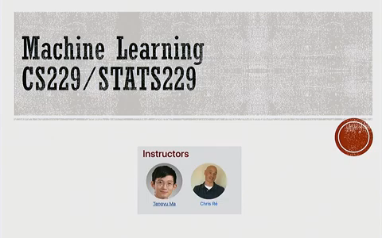
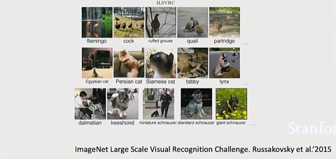
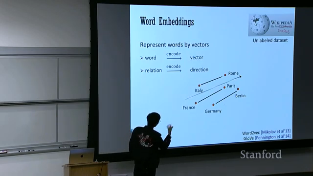
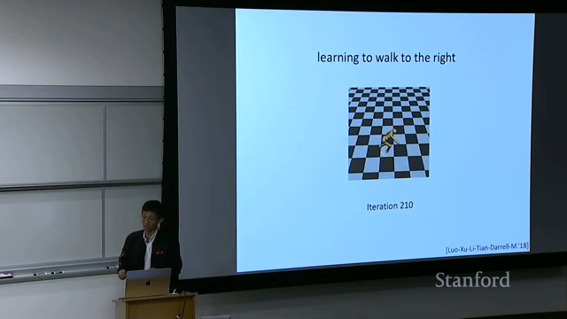

Конспект · Стэнфорд · CS229 · 2026

Как учится ИИ: конспект лекции Стэнфорда 2026
Начальный уровень
Что за лекция. Это введение в курс Стэнфорда CS229 «Машинное обучение». Восемь мыслей ниже объясняют, как учат нейросеть, без формул
Можно посмотреть запись по ссылкам или прочитать конспект. Первые три мысли про основу: что значит «научилась», зачем один чат на разные задачи и почему обучение ускоряют. Дальше четыре способа учить нейросеть: по картинкам с подписями, по обычным текстам, по просьбам и по её собственным удачным попыткам. Между третьим и четвёртым способом стоит короткая остановка: что происходит, когда чат «думает». В конце три приёма с настоящими ответами «до» и «после» для твоего чата
Оригинал
Где смотреть лекцию на русском
Запись называется Stanford CS229 Machine Learning | Spring 2026 | Lecture 1: Introduction. Её опубликовал канал Stanford Online, читает Тэнъюй Ма. Это обзор курса «Машинное обучение»: от первых определений до нейросетей, которые решают задачи и собирают примеры для следующего обучения
Английский голос и русский текст. Основной путь: шестерёнка → Субтитры → английские → снова шестерёнка → Субтитры → Перевести → Русский. Если пункта «Перевести» не видно, открой лекцию в браузере на компьютере
Русский голос. У этой записи на YouTube нет русской звуковой дорожки: проверено 12 октября 2026 года. Голос в оригинале английский
Перевод другим голосом. В Яндекс Браузере открой эту же ссылку и воспользуйся переводом видео, если он доступен для записи. Автоматический перевод иногда путает специальные слова, поэтому в конспекте они объяснены обычным русским языком
Если времени мало: начни с 05:30, после организационного вступления. А для главного примера в конце открой 31:46-33:58: там Ма разбирает задачу без готовых решений и показывает, что делать дальше
Карта лекции
Что идёт в лекции по минутам
Нажми на время, чтобы открыть запись с нужного места. В этой таблице порядок записи, а в конспекте ниже мысли собраны по темам
| Время | О чём речь |
|---|---|
| 00:00-05:30 | Преподаватели, подготовка, правила работы с ИИ и зачем учиться самостоятельно |
| 05:30 | Что считать обучением: опыт, задача и улучшение результата |
| 07:53 | Способы обучения и почему они пересекаются |
| 09:50 | Примеры с правильным ответом: цена дома, тип жилья, объект на картинке |
| 15:32 | ImageNet: миллион картинок и рост качества распознавания |
| 20:10 | Обучение без подписей: группы похожих объектов и документов |
| 24:03 | Слова как точки: страны, столицы и отношения между ними |
| 25:54 | Один чат для разных вопросов и обучение выполнению просьб |
| 28:02 | Получение изображений, затем робот и последовательность действий |
| 30:16 | «Думающая» нейросеть: текст внутри решения и случайность выбора |
| 31:46 | Задача без готового решения: где взять материал для обучения |
| 35:56 | Зачем ускорять обучение и обсуждать влияние ИИ на работу людей |
Конспект
Главное из лекции: 8 мыслей
Восемь мыслей, от простого способа учить к сложному
- Нейросеть учится на опыте, а обучение оценивают по результату
- Один чат принимает разные задания обычными словами
- Обучение дорогое, его стараются ускорить
- Картинки с подписью учат узнавать предметы
- В обычных текстах нейросеть находит связи без подписей
- Выполнять просьбы нейросеть доучивают специально
- Даже когда «думает», нейросеть пишет текст по шагам
- Собственные попытки проверяют, на удачных учат снова
Мысль 1. Нейросеть учится на опыте, а обучение оценивают по результату
Нейросеть научилась, если после обучения у неё получается лучше. Но «лучше» сначала надо измерить: иначе непонятно, учится она или нет
Как это видно в шахматах
Представь, что нейросеть учат играть в шахматы. Опыт для неё - сыгранные партии. Чтобы понять, научилась ли она, считают долю побед: сколько партий из ста она выиграла. Допустим, после ста партий она выигрывает по-прежнему редко: значит, не научилась. Если выигрывает вдвое чаще, научилась. Само число сыгранных партий ничего не говорит: можно сыграть тысячу и не стать лучше. Цифры для примера
Как это связано с твоим чатом: заранее реши, по чему поймёшь, что ответ хороший: понятно, коротко, точно
Мысль 2. Один чат принимает разные задания обычными словами
Один и тот же чат принимает разные задания, описанные обычными словами. Чтобы сменить задачу, достаточно написать другую просьбу
Что изменилось
Раньше нейросеть учили одной задаче, и вопрос был заранее известен: «что на картинке?» или «сколько стоит дом?». В ChatGPT на слайде другая подсказка: «Ask anything», то есть «Спроси что угодно». Одна и та же нейросеть может объяснить слово, написать письмо и сократить длинный текст
Мысль 3. Обучение дорогое, его стараются ускорить
Обучение нейросети - это огромные вычисления, поэтому оно дорогое. Лектор называет такие цифры: ускорить обучение вдвое для OpenAI, которая делает ChatGPT, значит сэкономить миллиарды долларов. Даже 20% уже ощутимо. А для исследователя это время: если его способ вдвое быстрее, он успевает проверить идею за год, а другому нужно два. В курсе этому отведена отдельная тема: как заставить программы и оборудование работать быстрее. Ма говорит об их совместной работе, но конкретный способ ускорения в этой вводной лекции не разбирает
Мысль 4. Картинки с подписью учат узнавать предметы
Первый способ: нейросети показывают примеры с правильным ответом. Это обучение, при котором есть, с чем сравнить её ответ и увидеть ошибку; в следующей мысли будет обучение без подписей
Птицы, кошки и собаки
На картинке птица, а рядом её название; на другой кошка, на третьей собака. Нейросети показывают много таких пар, и на них она учится узнавать предметы. Картинка задаёт вопрос, подпись даёт правильный ответ
Важно, что потом ей показывают новую картинку без подсказки. Она должна назвать предмет сама. Так можно увидеть, научилась ли она узнавать его, а не просто повторять подпись рядом со знакомой фотографией

Зачем понадобился миллион картинок
ImageNet - набор из миллиона картинок с подписями, который собрала команда Фей-Фей Ли, профессора Стэнфорда. Следующий по размеру набор был примерно в 20 раз меньше, около 50 тысяч. На ImageNet обучили нейросеть AlexNet распознавать предметы: точность выросла примерно с половины до 95% и выше (числа лектор назвал по памяти)
Точность здесь - доля картинок, на которых предмет назван правильно. Это ответ на вопрос из первой мысли: как измерить «лучше»
Чему её учили
AlexNet умела одно: назвать, что на фото. Спросить у неё что-то другое про ту же фотографию было нельзя: она училась одной конкретной работе. Умение узнавать птиц, кошек и собак само по себе не учит выполнять любую просьбу
Как это связано с твоим чатом: если чат хорошо сделал одно, например сократил текст, это не значит, что он так же хорошо посчитает сдачу: важное проверяй отдельно
Мысль 5. В обычных текстах нейросеть находит связи без подписей
Второй способ: нейросеть учат на обычных текстах без специально добавленных подписей. В этих текстах уже встречаются слова и связи между ними, которые она может найти
Карта слов
Слова нейросеть тоже превращает в точки на карте: слова со схожим смыслом оказываются рядом. На слайде лекции так расставлены страны и столицы. От Италии к Риму идёт стрелка. От Франции к Парижу - стрелка в ту же сторону. От Германии к Берлину - тоже. Поэтому, если взять страну и пройти в этом направлении, скорее всего придёшь к её столице

Кто составил список столиц
Никто не составлял список «страна - столица». Нейросеть увидела эту связь в обычных текстах, например в Википедии, где про Рим пишут «столица Италии». К словам никто не добавлял правильный ответ, как добавляют подпись к фотографии кошки: поэтому это называют обучением без подписей
Как это связано с твоим чатом: слова со схожим смыслом для нейросети близки, поэтому вопрос, написанный своими словами, обычно работает
Мысль 6. Выполнять просьбы нейросеть доучивают специально
Третий способ: нейросеть доучивают выполнять просьбы. Ей показывают пары «просьба и хороший ответ на неё», как - подробнее разобрано в первом конспекте Стэнфорда. Раньше нейросети плохо слушались инструкций, поэтому OpenAI и Anthropic, разработчики ChatGPT и Claude, специально их этому доучивали
Как просьба меняет ответ
Сравни «Объясни, что такое нейросеть» и «Объясни, что такое нейросеть: три предложения, без терминов, один пример с кухни». В обоих случаях тема одна, но во втором названы условия: сколько написать, какие слова использовать и какой пример дать
Первый вопрос оставляет выбор за нейросетью: можно начать с определения, описать устройство или перейти к сложным подробностям. Во втором вопросе человек заранее описал, какой ответ ему нужен. Посмотреть реальные ответы можно в приёме 1
Короткий ответ тоже может содержать ошибку. После проверки длины и понятности проверь содержание
Как это связано с твоим чатом: условия ответа пиши прямо в просьбе
Мысль 7. Даже когда «думает», нейросеть пишет текст по шагам
Когда чат «думает», нейросеть пишет текст по шагам, и часть этого текста тебе не показывают. Каждый написанный шаг влияет на следующий
Почему шаги связаны
Сначала лектор показывает робота, который учится ходить: каждое его движение зависит от предыдущего, а при неудачном шаге он может упасть, и продолжить уже трудно. С текстом похоже: нейросеть пишет ответ по одному слову или части слова, и написанное раньше влияет на то, что будет дальше. А в выборе следующего слова есть доля случайности, поэтому один и тот же вопрос иногда даёт разные ответы

Что можно сделать в чате
Попроси расписать решение по шагам: так проще увидеть, где ошибка
Как это связано с твоим чатом: проси объяснение, в котором можно проверить шаги
Мысль 8. Собственные попытки проверяют, на удачных учат снова
Четвёртый способ: нейросеть учат на её собственных удачных попытках. Раньше ей давали уже собранные картинки или тексты, теперь новые примеры можно получить из её решений
Задачи есть, готового решения нет
Лектор берёт математические утверждения, которые нужно доказать, а готовых доказательств нет. Нейросеть пишет доказательства сама. Каждое проверяют: подходит оно или нет. Неверные выбрасывают, верные становятся новыми примерами для обучения
Как именно проверяют, вводная лекция не разбирает, важен порядок: для следующего обучения берут только попытки, которые прошли проверку
Пример наш: это как ученик, который решает задачи, проверяет решения и запоминает только верные
Четыре действия по кругу
- Нейросеть решает задачи. Предлагает варианты, среди которых могут быть ошибки
- Решения проверяют. Правильные отбирают для нового обучения
- Разработчики обучают нейросеть на отобранных верных решениях
- Нейросеть снова пробует. Её новые удачные решения могут стать примерами для следующего круга
Нейросеть сама помогает собрать примеры, на которых её учат. Ответ на вопрос из начала статьи появляется здесь: когда готового решения нет, попытки предлагают, проверяют и используют дальше
Обычная переписка не выполняет это обучение. После отбора разработчики отдельно обучают нейросеть. Просьба «попробуй ещё раз» даёт новый ответ, но не означает, что этот этап обучения произошёл
Как это связано с твоим чатом: получи варианты и выбери по понятному условию
Для своего чата
Проверь лекцию в своём чате: три приёма до и после
Все восемь мыслей сводятся к одному: нейросеть выдаёт то, чему её учили, и то, что ты ей задал. Это легко увидеть самому: задай вопрос как обычно, потом в новом чате тот же вопрос с дополнительным уточнением и сравни ответы. Работает в ChatGPT, Claude и любом другом чат-боте
Запросы ниже наши, не из лекции. Ответы Claude даны выдержками из настоящих ответов, у тебя они получатся по-своему
Приём 1. Скажи, какой ответ нужен
Почему это работает: нейросеть специально учили выполнять условия (мысль 6). Поэтому сразу напиши в вопросе, какой длины нужен ответ и как объяснить
Было: только тема
Объясни, что такое нейросетьСтало: тема и условия ответа
Объясни, что такое нейросеть: три предложения, без терминов, один пример с кухниОтвет без дополнительного уточнения (выдержка, всего 401 слово)
Нейросеть (искусственная нейронная сеть) — это математическая модель, которая учится находить закономерности в данных. Идея взята у мозга, но устроена она гораздо проще: это не «искусственный мозг», а большая функция с настраиваемыми параметрами.
Ответ с дополнительным уточнением, целиком (64 слова)
Нейросеть — это программа, которая учится на множестве примеров, постепенно подмечая, что в них важно, а что нет. Её не программируют правилами вручную: ей много раз показывают правильные ответы, и она сама подстраивается, пока не начнёт угадывать верно. Это как начинающий повар, который сотни раз пробует суп и слушает, «пересолено» или «в самый раз», а потом уже сам, без подсказок, чувствует, сколько соли нужно.
До и после. Проверка в Claude 12 октября. Без дополнительного уточнения пришло 401 слово: длинное объяснение устройства нейросети, формула и специальные названия. С дополнительным уточнением 64 слова, три предложения и один пример: начинающий повар пробует суп, слушает «пересолено» или «в самый раз» и постепенно учится выбирать количество соли
Результат: ответ стал короче и проще. Проверь три условия:
- Длина: три предложения
- Слова: без специальных терминов
- Пример: понятен по обычной работе на кухне
Приём 2. Попроси решить по шагам и проверить
Почему это работает: нейросеть пишет ответ шаг за шагом, и ошибку в шагах увидеть проще, чем в одном итоговом числе. Попроси: «Реши по шагам и проверь ответ». Проверка обратным действием здесь - сложить сдачу и чек и получить исходные 2000 рублей
Было: задача без отдельной просьбы о проверке
В кафе купили 3 кофе по 285 рублей и 2 круассана по 190 рублей. На весь чек действует скидка 15%. Сколько сдачи с 2000 рублей?Стало: та же задача с проверкой
В кафе купили 3 кофе по 285 рублей и 2 круассана по 190 рублей. На весь чек действует скидка 15%. Сколько сдачи с 2000 рублей? Реши по шагам, в конце проверь ответ обратным действиемДо и после. Проверка в Claude 12 октября. Оба ответа верны: сдача 950,25 рубля. Без дополнительного уточнения тоже были шаги расчёта. С дополнительным уточнением в конце появились проверки: сдача 950,25 плюс чек 1049,75 дают 2000 рублей; чек после скидки пересчитывается обратно, и получается исходная сумма 1235 рублей
Проверка из ответа с дополнительным уточнением (выдержка)
- Сдача + оплата = исходная сумма:
950,25 + 1049,75 = 2000 ✅ - Оплата ÷ 0,85 = чек без скидки:
1049,75 ÷ 0,85 = 1235 ✅ - Чек без скидки раскладывается на покупки:
1235 − 380 = 855, 855 ÷ 3 = 285 ✅; 380 ÷ 2 = 190 ✅
Результат: цифра сдачи в обоих ответах одна. Но во втором её можно проверить за десять секунд, не пересчитывая всю задачу заново. Для денег всё равно сверь калькулятором
Приём 3. Попроси несколько вариантов и выбор по критерию
Почему это работает: предложить решения и отобрать подходящие - разные действия (мысль 8). В лекции сначала получают много попыток, потом отбирают удачные. В чате попроси несколько вариантов и выбор по условию, которое задал ты. Здесь выбираем название, понятное с первого раза
В чате ты просишь нейросеть выбрать и сам решаешь, согласен ли с выбором. Отдельное обучение на удачных попытках из мысли 8 проводят разработчики
Было: просьба придумать название
Придумай название для моего канала про личные финансы для мам в декретеСтало: варианты, слабые места и условие выбора
Придумай пять названий для моего канала про личные финансы для мам в декрете. У каждого назови слабое место. Выбери лучшее по критерию «понятно с первого раза» и объясни выборДо и после. Проверка в Claude 12 октября. Без дополнительного уточнения пришли 12 названий и три «фаворита». Среди них «Пока малыш спит» и «Не декрет, а депозит»; слабые места не перечислены. С дополнительным уточнением пришли пять вариантов, у каждого назван недостаток, а по условию «понятно с первого раза» выбрано «Деньги в декрете»
Без дополнительного уточнения (выдержка): три «фаворита»
- «Декрет в плюсе»: сразу понятна аудитория и обещание, звучит позитивно.
- «Пока малыш спит»: очень узнаваемо для мам, вызывает улыбку и подходит под формат коротких постов.
- «Не декрет, а депозит»: запоминается и хорошо работает как слоган.
С дополнительным уточнением (выдержка): выбор и причина
«Деньги в декрете».
Почему:
- Работает в поиске. Мама набирает «деньги декрет», «финансы в декрете» и находит канал по прямому совпадению.
- Не сужает тему. В отличие от «Декретного бюджета», сюда помещаются экономия, пособия, подработка и первые инвестиции.
Сухость, главный минус этого варианта, легко компенсировать описанием канала или подзаголовком.
Во втором ответе объяснён выбор: в названии прямо видны тема и аудитория. Главный минус тоже признан: оно звучит сухо. У варианта «Мама считает» замечена двусмысленность: это может быть и счёт для детей, и бухгалтерия, поэтому личные финансы не очевидны
Результат: видно, почему выбрано именно это название:
- Тема: понятно, что канал про деньги
- Аудитория: понятно, для кого он
- Недостаток: известен до окончательного выбора
Источники
Откуда взят конспект
Конспект подготовлен по записи вводной лекции Stanford CS229 весны 2026 года: английской речи и показанным слайдам. Это пересказ выбранных мыслей без формул, а не полный перевод. Таймкоды ведут к соответствующим местам оригинала; примеры запросов для чата составлены для этой статьи
Осталось решить, какую работу отдать нейросети
Что можно делать с нейросетями, если не знаешь кода?
Чтобы почувствовать размах, посмотри Концентрат Ивана Сергеева. ИИ-агенты на твоих глазах собирают продукт, контент, сайты и воронки без кода. Это основа под любую цель: свои услуги, партнёрка, чужой бизнес. Три дня бесплатно, VIP с четвёртым днём - 990 ₽
Забрать КонцентратУже знаешь, чего хочешь? Тогда в мастер-группу Ивана: система продаж на ИИ без продюсера и технаря, сопровождение и сообщество
Заполнить анкету предзаписиНабор открывается редко, кто записался заранее, получает лучшую цену и бонусы. Платить сейчас не нужно
Реклама. ИП Сергеев И. С., ИНН 352511695540. erid: 2Vtzqvk2p6q